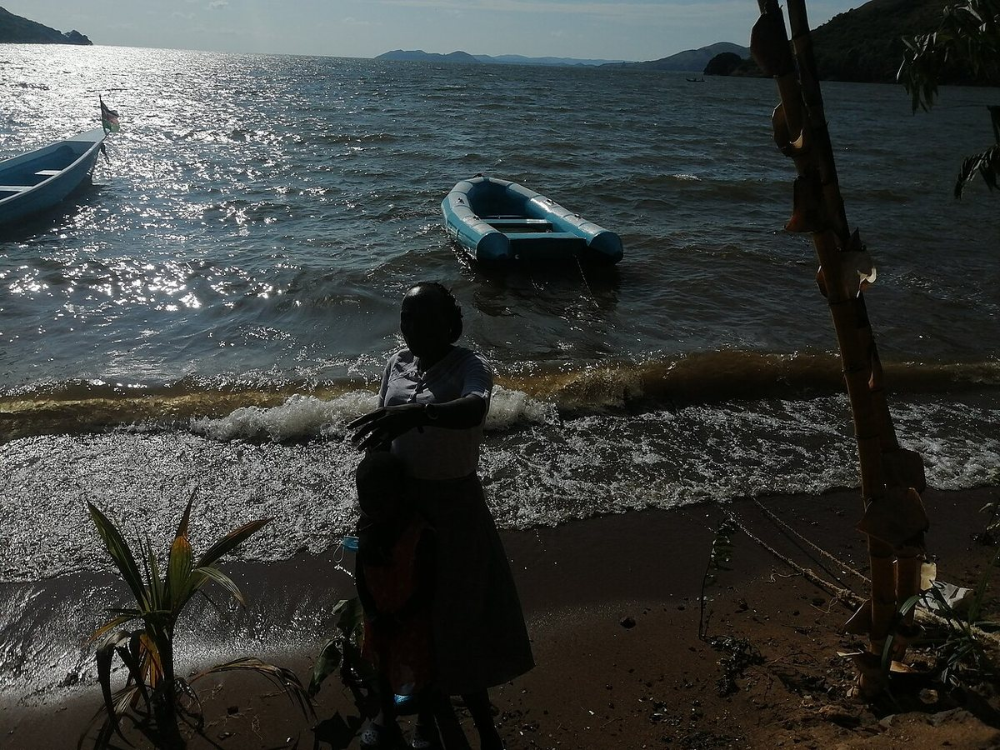

Plummer et al. · Full Nyayanga excavation study and site map (Science, 2023) ↗
The excavation report maps the Homa Peninsula setting and illustrates tools, bones and molars.
Deep dives / Africa & Middle East
Close to Lake Victoria, Nyayanga preserves evidence of Oldowan food processing well before 2.5 million years ago. The animal bones provide a way to ask how the implements were used, while two hominin teeth raise a separate question about who used them.
The map shows the Nyayanga research locality on Kenya’s Homa Peninsula.

Approximate public research locality on a modern terrain map.
Excavators recovered cutting flakes as well as heavy pieces used to strike or pound. Cut and percussion marks on animal remains, including hippopotamids, link sharp edges and pounding to carcass processing. Wear and experimental comparisons support additional use on plant materials. [1]
Magnetic polarity, fauna and radiometric analyses inform a range of about 3.03–2.58 million years in the published study. A best-fit age estimate of about 2.9 million years is widely used. The overlap with other early sites matters when comparing claims for the earliest Oldowan. [1] [2] [3]
Two molars are assigned to Paranthropus, representing that genus unusually early in the fossil record. They establish its presence in the area around the time of the tools. Exactly which hominin struck the flakes and processed the carcasses remains open. [1]
Placing Nyayanga in human-family chronology depends on bracketing stratified volcanic ash layers (40Ar/39Ar), cosmogenic nuclide burial ages, or paleomagnetic reversals above and below the artifact or footprint horizon rather than dating stone flakes in isolation. Reworking, fluvial transport, and cut-mark/percussion equifinality remain key variables evaluated in every new study. [1] [2]
Rather than identifying a single exclusive ancestor, this locality serves as a tightly constrained chronological anchor that must be compared side-by-side with contemporary Rift, southern, north African, and Eurasian finds inside the playable Human Family map. [1]
Open the source maps for their original detail, legends and dates. Their coverage and reproduction terms belong to the issuing institution.
The excavation report maps the Homa Peninsula setting and illustrates tools, bones and molars.
Open this era on global Explore ↗ Open Africa & Middle East atlas ↗ Climate, sea level & ice-sheet context ↗
Sources checked and linked above; geological and historical dating methods follow the primary papers.